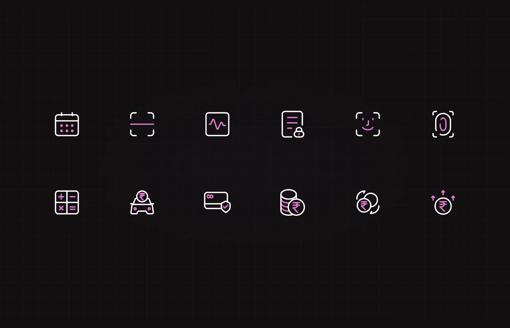

Where it all started, pixel by pixel.
A set of banking and everyday icons I drew from a blank grid in Figma, then taught myself to animate in After Effects. It was the first time I made something move, and it's where my interest in motion design started.
Published Animations on LottieFiles Icons on IconScout
- Role
- Icon design, motion
- Tools
- Figma, After Effects
- Type
- Personal project
01Icons
Drawn by hand, one grid at a time.
Every icon started from scratch in Figma, not from a library. A calendar, a scanner, a pulse, a locked document, face ID, a calculator, cards, coins and transfers, all built on the same grid with the same stroke and corners, so they read as one family.

02Motion
The first time I made something move.
Once the icons were done, I wanted to see them come alive. I taught myself After Effects to animate them and exported them as Lottie files. It was a lot of trial and error, and it's where my interest in motion design really started. I've carried it into my product work ever since.
See the animations on LottieFiles Browse the icons on IconScout